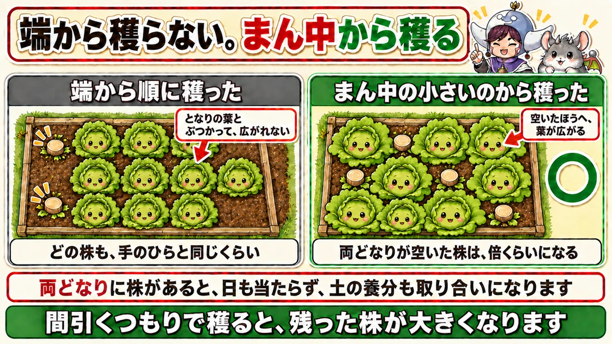
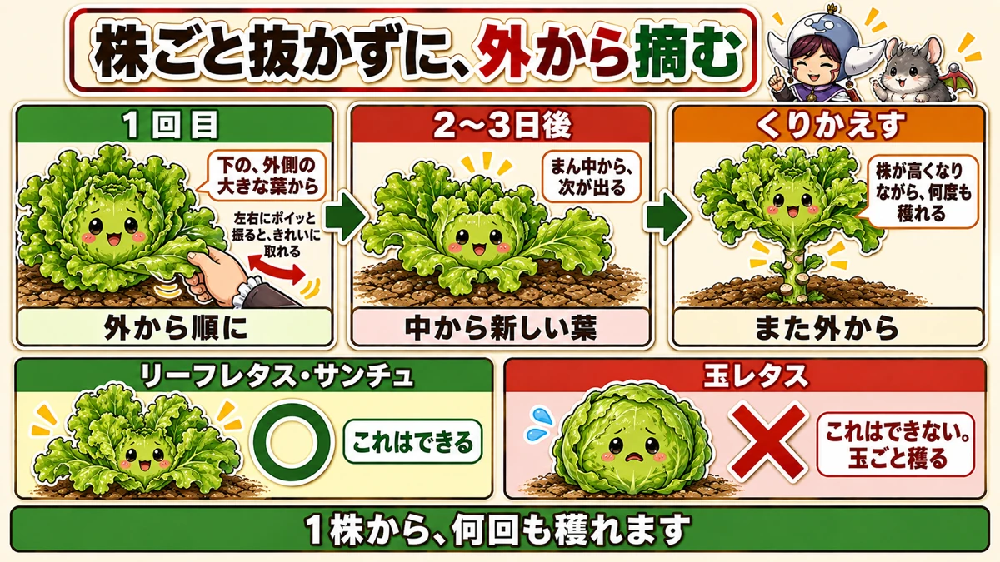
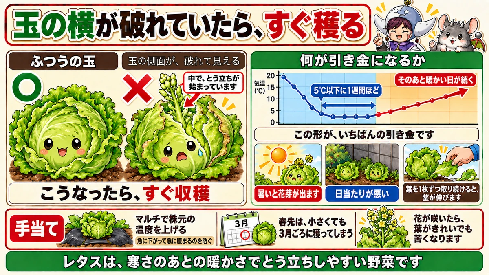
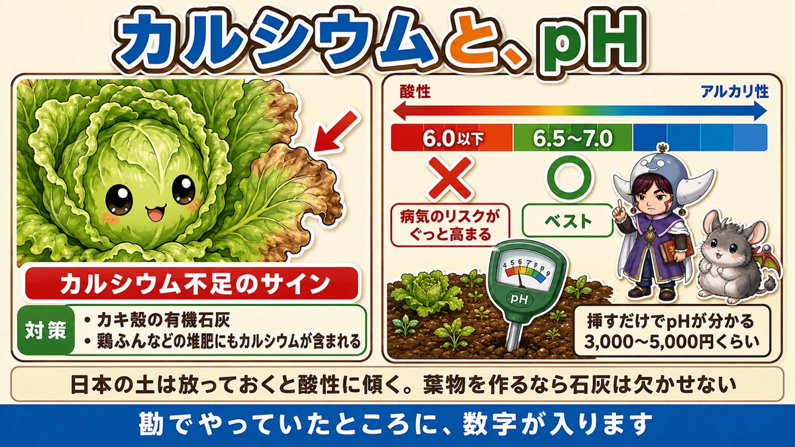

レタスの育て方｜玉・リーフ・ロメインの早見と、巻かない・芽が出ないときの対処
どうも、8150（えいこう）です🌱 家庭菜園歴8年、理科の教員免許を持っていて、有機・無農薬で野菜を育てています。
📖 この記事の目次
この記事で分かること
- 初めての一株はリーフが取り組みやすく、玉を作りたいなら外葉を育てる期間まで計画します。
- 種は浅くまき、土に密着させます。発芽の温度は空気だけでなく、種のある場所で考えます。
- 植えるときは根の土を崩さず、中心の芽を土の中へ押し込みません。
- 肥料は前作の残りを含めて判断し、水は土の湿りを見て加減します。
- 玉・リーフ・ロメインでは収穫方法が違います。混み合う場所を先に収穫すると、残す株の場所を空けられます。
- 株間、追肥、冬の保温には異なる説明があります。数字の違いと、選ぶときの条件を確認できます。
「レタスを植えたのに丸くならない」。そんなとき、まず確かめたいのは種類です。リーフレタスなら、葉が開いた姿がそのまま収穫の形。玉レタスの完成写真と比べると、元気な株まで失敗に見えてしまうんですよね。
このページでは『玉を収穫する』『葉を少しずつ摘む』『立ち上がる葉を楽しむ』を分けて整理します。みなさんが探しているのが植え方なら手順へ、いまの株の不調なら症状の章へ進んでください。最初から最後まで覚える必要はありません☺️
私がここでお伝えしたいのは、レタスの種類と季節を決めてから、肥料や収穫方法を選ぶことです。同じレタスという名前でも、作業の終点が違います。葉を摘むつもりで玉の外葉を取る、といった行き違いを減らせるだけでも、栽培の見通しがよくなります。
早見：レタスの育て方（ひと目で分かる数字）
まく日・植える日・収穫予定日
- 玉レタスの秋植え：9月中の定植を適期とする説明があります。残暑や寒さの進み方が違うので、全国どこでも同じ日程とは考えません。
- 玉レタスの春どり：1月後半に種をまき、2月中旬〜3月初めに植え、4月末に収穫する計画例があります。冬の育苗と保温を組み合わせた日程です。
- 冬から始める玉レタス：12〜1月に開始する説明もあります。春へ向かう作型を選ぶ考え方で、寒い場所でも無保温で育つという意味ではありません。
- ロメイン：春は1〜3月に苗を育て、5〜6月に収穫する例。秋は8〜9月にまく例があります。
- 地域差：種袋の地域別の作型を先に見ます。冷え込みが早い地域は秋の生育期間が短く、暖かい地域は残暑が長くなります。材料には、地域別の月を一律に並べられる資料はありません。
- 発芽の目安：種袋を扱った説明では15〜20℃。種の周りの土の温度を見ます。生育の目安は18〜23℃です。
- 発芽まで：7〜8日とする説明と、暖かい時期は約1週間、低温では約2週間とする説明があります。
- 定植する苗：本葉1〜2枚、本葉3枚、本葉3〜5枚という複数の目安があります。葉数だけでなく、根の土が扱えるかも確認します。
- 収穫まで：玉は約50〜60日、リーフは約30日、ロメインは約2か月という説明があります。種まきからか植え付けからかを区別し、季節による伸び縮みも見込みます。
間隔・土・肥料の数字
- 種の粒数：1か所4〜5粒という説明。最終的には1本にします。
- 種にかける土：ごく薄く隠す程度〜約5mmという説明が中心です。ほぼ土をかけない方法もあります。深い穴を使う別の説明との違いは、後ろの両論の章で整理します。
- 玉の株間：最終30cmに間引く方法と、初めから40cmを確保する方法があります。キャベツと混ぜる例では50cm、列どうしは40cmです。
- 玉の列の間：株間40cm・列間30cmという組み合わせの例があります。株と株の距離、列の距離、うねの幅は別の数字です。
- ロメインの株間：30cmが一つの目安。25cmの千鳥配置や40cmの例もあり、20cmを密植の限界とする説明があります。
- うねの高さ：排水を重視して15〜20cmにする説明と、高さを指定せず既存のうねを使う説明があります。
- うねの幅：材料に共通の固定値はありません。列数、株間、列間を決めたうえで、通路とネットを置ける広さを取ります。
- 土の酸度：pH6.5〜7.0を好適とする説明があり、6.0以下の酸性側で病気を心配する説明があります。酸度は測ってから考えます。
- 元肥：前作の肥料が残る場所では追加しない方法があります。長く作付けしていないなど、肥料分が乏しい場合の例は1㎡に牛ふん1Lと油かす50ccです。
- 土を準備する時期：土づくりから植える準備まで約2週間置く例があります。春の玉なら、1月中旬までに準備する計画と組み合わせます。
- 追肥開始：定植後2〜3週間。2週間後に始める方法と、約3週間後に一度施す方法があります。
- 追肥回数：リーフは1回、玉は2〜3回という方法。有機栽培では玉も1回という説明があります。同じ栽培の必須回数として足し算しません。
- 連作の間隔：レタスを何年あけるかという数字は材料にありません。年数を作らず、前作の種類と病害虫の履歴を確認します。
数字を自分の計画へ移すときの確認
『30日で収穫』だけをメモすると、まいた日から30日なのか、苗を植えてからなのか分からなくなります。ノートには、種をまいた日と植えた日を別々に残してください。買った苗なら、購入日と定植日を記録するだけでも役に立ちます。
株間も、最初の配置と最後の配置を分けます。15cmごとにまいて、途中の株を食べながら30cmへ広げる方法は、15cmのまま大玉を並べる方法ではありません。小さい株を抜く日まで予定に入れて、初めて一組の手順になります。
- 種袋か苗のラベルで、玉・リーフ・ロメインの別を確かめた
- 自分の地域に合う作型と、収穫後に植える野菜を確認した
- 株間と列間を別の数字で記録した
- 元肥を足す前に、前作で何を入れたか振り返った
- 収穫予定日は仮置きにして、葉や玉の状態でも判断することにした
全部の数字を選び切れなくても大丈夫です。まず『何を育てるか』『いつ植えるか』『どこに置くか』の三つを決めましょう。肥料の回数だけ先に決めると、土や種類の違いが置き去りになりやすいです。
作業の手順（時期の順）
1．収穫の形から種類を選ぶ
- 丸い玉を切って収穫したいなら玉レタスを選びます。外側の葉を育て、その後に内側が巻く期間を確保します。
- 葉を少量ずつ使いたいなら、リーフレタスやサンチュを候補にします。玉になるのを待たないので、初めてでも収穫へ進みやすい種類です。
- 立ち上がる葉や、加熱しても残る食感を楽しみたいならロメインを候補にします。半結球の姿を、丸い玉とは分けて見ます。
- 決めた種類について、種袋の適期と地域区分を確認します。種類が合っていても、植える季節がずれると発芽や収穫でつまずきます。
ロメインはコスレタス、タチレタスという呼び方もあります。名前が違うと別の野菜に見えますが、ラベルを読むときは、葉の姿と半結球する性質まで確かめると整理できます。
リーフとロメインに比べ、玉レタスは収穫までの条件をそろえる難しさがあります。丸くならなくてもよいリーフは、玉づくりの待ち時間を省けます。初めてなら『まず葉を収穫できる種類』を選ぶのも、ちゃんとした計画です。いきなり難しい方を選ばなあかん、ということはありません☺️
品種名だけで選ばず、どの季節に育てる品種なのかを見てください。冬の結球を狙う計画と、残暑の中で苗を植える計画では、必要な性質が変わります。手元の表示で確認できない品種の特徴を、名前の印象だけで決めないようにします。
2．前作と水はけを見て、土を準備する
- 前に育てた野菜と、そのとき入れた肥料を確認します。収穫後の場所だからといって、毎回ゼロから肥料を積み直す必要はありません。
- 雨のあとに水が残る場所かを見ます。湿りやすい場所では、高さ15〜20cmを取るうねづくりの説明が参考になります。
- 酸度を確かめ、pH6.5〜7.0という材料の目安と照らし合わせます。数字を上げたいからと、量を決めずに石灰を足すことは避けます。
- 肥料分が残っているなら、追加を控える方法を検討します。長く栽培していないなどの条件では、1㎡に牛ふん1Lと油かす50ccという準備例があります。
- 土づくりを行う方法では、約2週間置いてから植える段取りを取ります。日程を先に確保すると、植える当日に全部済ませる慌ただしさを減らせます。
『元肥』は植える前に入れる肥料、『追肥』は育っている途中に加える肥料です。レタスでは、この二つに前作の残りも加えて考えます。元肥が少なかったという記録だけで、土全体に肥料が少ないとは決められません。
牛ふんと油かすの例は、どの畑にも必ず入れる量ではありません。土が肥えている場所にも同量を重ねると、追加しない方法の前提が消えてしまいます。量の単位にも注意してください。1Lと50ccは体積で、gは重さです。数字だけそろえて置き換えることはできません。
うねの高さは、レタスだけを見て決めるものでもありません。水はけがよい場所の説明を、水のたまりやすい場所にそのまま移すと条件が変わります。雨の翌日の土を見ることが、まず一つの判断材料になります。
3．列と植え穴を決め、地表を覆う
- 玉なら最終株間30〜40cmの説明を起点にします。途中で間引く方法か、苗をそのまま仕上げる方法かを選びます。
- ロメインなら30cmを一つの目安にし、25cmの千鳥配置や40cmの例と比べます。20cmの密植例を、どの条件でも使える標準にはしません。
- 二列にするなら、株間とは別に列間を取ります。交互にずらす千鳥配置では、斜めに隣り合う株の距離も確かめます。
- 泥の跳ね返りを減らすため、植える前にマルチを用意します。後から葉の下へ張ると作業しにくくなります。
- 暑い時期に黒いマルチへ葉が接触しそうなら、白黒マルチを使う説明など、季節に合う地表の覆い方を検討します。
マルチは、土の表面を覆う資材です。雨で葉へ土が飛ぶのを減らし、地表の温度や乾き方にも影響します。張っただけで病気や虫がなくなるものではないので、葉の確認は続けてください。
有機肥料をうねの間へ施し、土をほぐして混ぜる方法では、マルチを使わない選択もあります。泥はねを防ぎたいことと、土へ肥料を混ぜたいこと。この二つを、実際の作業ができるかで調整します。詳しくは説明が分かれる章で比べます。
うね幅を先に決めてから「株が入らん…」となると、間隔を詰めたくなりますよね。先に株間と列間を置き、そこから幅を考えるほうが、葉の広がる場所を残しやすいです。通路は、苗を植えるためだけでなく、葉裏を見たり収穫したりするためにも使います。
4．種をまくなら、薄い覆土と密着をそろえる
- 冬にまく方法では、先に覆いを設けて土を暖める段取りがあります。約1週間前から保温する例を、種まき当日の予定と一緒に確認します。
- まく場所へ先に水を含ませます。冬は午前中に作業する説明があり、午後の給水から夜の凍結へつながる条件を避けます。
- ほぐした表面を手のひらで押さえます。土をふわふわのままにせず、種が接する場所を整えます。
- 1か所へ4〜5粒を置きます。深く沈めず、土が薄くかかる程度〜約5mmという説明を確認します。
- 表面をもう一度押さえ、種と土を接触させます。水を追加する必要があるなら、勢いで種を動かさないようにします。
- まいた日を記録し、暖かい条件なら約1週間、寒い条件なら約2週間という目安で観察します。
レタスの種には、光が発芽を助ける性質があります。『好光性』と呼びますが、名前を暗記するより『深く埋めない種』と覚えるほうが使いやすいかなと思います。
土を薄くかける方法でも、種が乾いてしまっては発芽に必要な水を受け取りにくくなります。浅くすることと、土へ密着させることはセットです。穴を掘って種を落とすだけでは、この二つがそろっているか分かりません。
ジョウロは、まいた場所の外で水の流れを整えてから動かす方法があります。かけ終わりも外へ移して止めます。最初の強い流れが種へ当たるのを避けるためです。マルチの穴へ水を入れる方法では、2〜3回に分けて浸透させる説明もあります。
材料には、夏の発芽を助ける具体的な低温処理や遮光の規格はありません。暑いからと、日数や資材の仕様を想像して足さないでください。種袋の適期から外れているなら、まずまく時期を見直すところから始めます。
5．発芽後は明るさ、根、込み具合を見る
- 芽が出たら、育苗場所の明るさを確かめます。薄暗い場所へ置き続けないようにします。
- 覆いを外す時期は、発芽後すぐという方法と、本葉3枚まで残す方法を比べます。寒さと、覆いが葉へ当たる状態の両方を見ます。
- 直まきでは、本葉3〜4枚のころから2〜3回に分けて間引く説明があります。最終的に各場所を1本へ整理します。
- 霜柱が立ったあとには、根が浮いていないか確かめます。土を押さえて、根と土の接触を戻す方法があります。
- 移植する計画なら、葉数と根の土のまとまりを確認し、暗い場所で長く待たせないようにします。
本葉は、最初の双葉のあとに出る、その野菜らしい形の葉です。苗の目安が『本葉3枚』なら、双葉を足して数える話ではありません。小さい苗ほど枚数を見分けにくいので、中心から出る新しい葉も一緒に観察してください。
間引きは、ただ本数を減らす作業ではありません。残す苗が葉を広げる場所を作る作業です。初めに4〜5粒まいた場所を、その本数のまま仕上げるつもりで見ないようにします。
移植への強さと、苗を雑に扱ってよいことは別です。レタスには移植しやすいという説明がありますが、根を包む土は崩れやすく、葉も折れやすいです。植え替えの選択肢があるからこそ、急がず扱うと使いやすくなります。
6．苗を植えるときは、中心を埋めない
- 大きすぎて葉が折れそうな苗を避け、小さめ〜中間の大きさを候補にします。本葉1〜2枚と3〜5枚の目安は、別の育苗方法として比べます。
- 根を包む土の塊が少し出る程度の深さに植え穴を調整します。その土の塊を『根鉢』と呼びます。
- 穴へゆっくり水を入れ、半分ほどたまる方法では、水が引き切るまで待ちます。
- 苗を指で支え、容器を返して取り出します。葉や茎を強く引っ張って抜かないようにします。
- 根鉢を優しく置き、中心の新しい葉が出る場所を土で覆わないように整えます。
- 残暑の植え付けでは、夕方を選ぶ説明があります。暑い時期の定植と、冬の午前中の種まきを混同しません。
根鉢が少し高くなる植え方と、種を浅くまくことは、どちらも『浅く』という言葉が出ます。ただし目的は違います。種まきは発芽に届く光、植え付けは中心の芽と根鉢の位置です。種の覆土の数字で、苗の穴の深さを決めないでください。
植え穴の水がいつまでも引かないなら、次の苗へ進む前に排水を見直します。水を吸わせるための穴が、水をため続ける場所になっていないかを確かめるわけです。
葉が大きい苗ほど立派に見えますが、運ぶときや植えるときに葉を折りやすくなります。苗選びでは『大きさの迫力』より、傷みなく植えられる状態を見ます。ここ、見た目の立派さに引っ張られやすいところなんですよね。
7．植えたあとに、防虫と防寒の準備をする
- 葉の裏、中心、株元を見てから防虫ネットで覆います。覆ったあとも、内側に虫がいないか確認を続けます。
- ネットの裾を点検します。端の隙間があると、覆いがあっても虫の入口になります。
- 周囲の雑草を片づけ、株元の穴や食害を見やすくします。葉の傷だけでなく、土の近くも観察できる状態にします。
- 冬の方法では、透明ビニールと防虫ネットを重ねる例があります。さらにトンネルの上へ不織布を掛ける説明もあります。
- 覆いの中でも日が当たるか、葉が地面に張りつくように止まっていないかを見ます。覆いの枚数だけで生育を決めつけません。
防虫ネットは、寒風をいくらか和らげる説明はあっても、透明ビニールと同じ保温効果を前提にできません。『覆っているから冬の準備は済んだ』とせず、何のための覆いかを確認します。
白菜やキャベツと混ぜて植える方法もあります。レタスはキク科、白菜やキャベツはアブラナ科で、好む虫が違うことを利用する考え方です。ただ、ヨトウムシは両方につきます。混植をネットや観察の代わりにはしないでください。
8．定植後2〜3週間で、追肥の予定を点検する
- 元肥と前作の残りを確認します。追肥の日が来たことだけで、自動的に追加しないようにします。
- 植えて2週間後に始める方法か、約3週間後に一度行う方法かを選びます。異なる方法の回数を重ねません。
- リーフと玉を分けます。リーフは1回、玉は2〜3回という説明と、有機栽培で1回という説明があります。
- 土へ混ぜる有機肥料の方法なら、うねの間に施して土をほぐし、混ぜ込む作業まで行います。
- 冷える季節は、効き方が遅くなることを見込みます。見た目がすぐ変わらないからと、短い間隔で足し続けないようにします。
玉を作るレタスでは、初期に葉を増やして広げる段階の追肥を重視する説明があります。中心が巻き始めないことに気づいてから、遅れた作業を大量の肥料で取り返す、という考え方にはしません。
追肥量には1株3gという説明がありますが、使う肥料の条件をそろえる必要があります。すべての肥料を同じ3gにする意味ではありません。『一つかみ』という表現も、手の大きさで変わります。量を決めるときは製品の表示と重さを確かめ、手の感覚だけで合わせないようにします。
窒素が多すぎると、株の傷み、苦み、収穫期間の短さを心配する説明があります。一方で不足側の問題を挙げる説明もあります。多いほうが安心、少ないほうが安心、と片側へ振り切らず、土と株の状態をそろえて見ます。
9．水は、予定表より土の湿りで判断する
- 種まきや植え付けのときの給水を済ませます。その後の水管理とは分けて記録します。
- 土が湿っているなら、習慣だけで水を足さないようにします。秋の長雨があれば、雨も給水の一部として考えます。
- 冬の露地で、種まき後は極端な乾燥時だけ水を補う説明があります。湿りが保たれる条件での管理として読みます。
- 乾きが強いときには土の状態を確かめます。葉がしおれたからと水だけに決めず、根元の傷みも調べます。
- 冷える季節は、水を加えたあとの凍結や地温低下を考えます。冬の午前中の作業という説明を参考にします。
乾き気味にするとは、発芽や根づきに必要な水まで省くことではありません。『種まき時だけ』という言葉を、買ってきた苗の植え付けにも機械的に当てはめると、最初の手順が抜けます。
雨が入る露地と、覆いのある場所では、土へ入る水が違います。毎日の回数を先に固定するより、実際に湿りが続いているかを見るほうが、この違いを拾いやすいです。水をやった日だけでなく、まとまった雨の日も残すと振り返れます。
10．収穫は、種類ごとに終わり方を変える

- 混み合う場所があれば、そこにある小さめの株を先に収穫します。端から一方向に取り進める方法だけに固定しません。
- 残す株の隣に空間ができたか確かめます。途中収穫は、食べる作業と株間を広げる作業を兼ねます。
- 玉は軽く押して、まだ少し柔らかさが残る段階を見ます。硬く張るまで待ちすぎない方法があります。
- リーフやサンチュで外葉を摘むなら、株は残し、下の大きい葉から取ります。中心の新しい葉を残します。
- ロメインを切り戻す方法では、株元に最低5〜6枚の葉を残して切ります。根まで引き抜く収穫と分けます。
- 春に茎が伸びる気配や、玉の側面が割れたような形があれば、予定日まで待たず収穫の判断をします。

外葉を摘む方法は、リーフとサンチュの説明です。玉を育てている株の外葉を同じように取ると、玉づくりのために残しておきたい葉を減らしてしまいます。『レタスは何回も摘める』と一括りにしないことが、収穫方法を選ぶコツです。
ロメインの切り戻し後には、追肥と保温を組み合わせる方法があります。ただ、今回の材料では、追肥量を『二か所それぞれの量』と読むのか、全体量と読むのかに注意が必要です。数字を確定せず、切り戻しを選ぶときは使う肥料の表示も確認してください。
冬の株は、普段見る大きさに届かないことがあります。健全な小さい葉を収穫する選択もあるので、サイズだけを目標にして霜の傷みが進むまで待たないようにします。大きくなるのを待つことと、いま食べられる葉を確保することを比べてください。
11．収穫が終わったら、次作の条件を見直す
- 前作の病気や虫の被害を記録します。健全に終わった場所と、傷んだ株が続いた場所を分けます。
- 問題が少ない場所では、残っているマルチや肥料分を利用する方法があります。毎回全部をやり直す前に、残っているものを確認します。
- 病害虫が多かった場所や、狭い面積を繰り返し使う場合は、土を耕し直す方法を検討します。
- 次の野菜の作型を確認します。材料には、にんじん、リーフレタス、春菊、ほうれん草、スナップえんどうという候補があります。
- 春菊なら寒さへの備え、ほうれん草なら酸度の調整など、次作側の条件を見ます。レタスが育った土だから、何でも同じ準備でよいとはしません。
枝豆や大根のあとにレタスを入れる方法もあります。枝豆のあとでは肥料を控える説明、大根のあとでは柔らかい土と残肥を利用する説明があります。前作名だけで追肥をなくすのではなく、実際の施肥履歴まで見てください。
冬から春へ玉レタスを育て、収穫後にトマトやなすへ移る計画例もあります。次の苗を植えたい日が決まっているなら、レタスの収穫日を仮置きし、場所が空くかを先に確認します。収穫できても夏野菜の置き場がない、は避けたいところです。
失敗の見分け方（症状→原因→やること）
予定の日を過ぎても芽が見えない
- 症状：まいた場所に双葉が見えず、周りだけ変化がありません。
- 考えられる原因：覆土が深い、種の周りの温度が合わない、種と土が密着していないなどが候補です。寒い条件では、発芽までの時間も長くなります。
- やること：まいた日、覆土の厚さ、土の温度と湿りを順に確認します。約1週間という数字だけで打ち切らず、低温では約2週間の説明も比べます。
まずは、まいた深さを振り返ってください。レタスは、どの野菜にも同じ深さの穴を作ってまく方法と相性がよくありません。まき直すなら、浅くすることだけでなく、先に土へ水を含ませ、表面を押さえる手順も一緒に整えます。
覆いを付けた冬まきでも、土がどれくらい暖まっているかは別の確認です。空気が暖かかった一日だけで、種のある場所が適温に達したと決めないようにします。芽が出ないから追肥、という順番にはしません。
芽は出たが、寒い日に浮き上がっている
- 症状：小さい苗の周囲に霜柱があり、土と根の間が離れたように見えます。
- 考えられる原因：凍った土が持ち上がり、根と土の接触が失われた状態が候補です。
- やること：霜柱のあとに土を押さえ、根の周りを戻します。冬の保温と、給水する時間も確認します。
この場合、苗の大きさだけを見て肥料不足を疑うより、根元を見るほうが先です。根が土から浮いた状態では、水や養分を受け取る条件も変わります。発芽できたことと、その後の根が落ち着いていることは分けて確かめます。
葉が地面に広がったままで、大きくならない
- 症状：葉が低く広がり、中心の新しい葉の伸びが乏しく見えます。
- 考えられる原因：冬の保温不足、日当たり不足、株の混み合いなどを考えます。ロゼット状に低くとどまる説明もあります。
- やること：種類を確認し、光、覆い、株間を見直します。肥料を足す前に、育つ場所が確保されているかを点検します。
『ロゼット』は、葉が低い位置から広がる姿のことです。姿だけで病気と決めるのではなく、以前と比べて伸びが止まっているか、冷え込む期間と重なっているかを見ます。
冬に一重の覆いで低くとどまり、二重で上へ伸びたという説明があります。ただし、株が小さい理由を覆いの枚数だけに固定しないでください。同じ日にまいても、日当たりの違う場所で成長がずれる説明もあります。
葉はあるのに、中心が丸くならない
- 症状：外側の葉は伸びていますが、期待した玉ができていません。
- 考えられる原因：そもそも非結球の種類、初期生育の遅れ、日当たり不足、防寒不足、追肥の時期のずれなどが候補です。
- やること：種類のラベルを見たあと、植えた日、外葉の枚数と広がり、中心の状態を確認します。健全な葉を食べる選択も含めて判断します。
ロメインは半結球で、リーフは結球しません。ここを飛ばして玉にならない原因を探すと、正常な姿を直そうとすることになります。
玉レタスでも、寒くなる前に外葉を十分広げられなければ、後から玉だけ大きくするのは難しくなります。葉を摘んでいないか、最初の追肥の区切りを逃していないかを振り返ります。すでに茎が伸び始めた株は、巻くのを待つより収穫の判断へ進みます。
中心が持ち上がる・玉の側面が裂けて見える

- 症状：茎が伸びる、中心が高くなる、玉の脇が押し開かれたような姿になります。
- 考えられる原因：花を咲かせる段階へ進む『とう立ち』が候補です。暑さや栽培時期のずれを確かめます。
- やること：収穫日を先延ばしにせず、株の状態で判断します。葉がきれいでも、花が咲く段階では苦みが強まる説明があります。
材料には、寒い期間のあとに暖かくなることでとう立ちしたという説明もあります。ただ、温度の一つの数字から全品種の状態を確定するのは避けます。畑では、実際に中心や側面がどう変わったかを優先してください。
外葉を摘む収穫を続けていても、永久に同じ姿で葉が増えるわけではありません。茎の伸びに気づいたら、『次の葉を待つ』から『いま収穫する』へ切り替える区切りになります。
葉先だけが茶色く、乾いたように傷む
- 症状：葉の先や縁が茶色くなり、中心や他の葉と傷み方が違います。
- 考えられる原因：材料ではカルシウムに関係するチップバーンという生理障害が挙げられています。虫が食べた穴とは分けて見ます。
- やること：葉先の形、土の酸度、これまでの肥料を確認します。見た目だけで石灰を追加する量を決めないようにします。

生理障害は、病原菌や虫だけで説明する症状とは違います。『茶色いから薬』『カルシウムの話だから大量の石灰』と、原因の候補から作業を飛ばさないことが大切です。
材料では酸度の目安も示されていますが、葉先が傷んだことだけで土が酸性だと断定はできません。土の状態を調べたうえで、調整の必要があるかを考えます。
株が柔らかくなり、崩れるように傷む
- 症状：しなびるだけでなく、葉や株元が柔らかくなり、形を保てなくなります。
- 考えられる原因：腐敗病や軟腐病系の傷みが材料に挙げられています。湿りすぎ、高温多湿、窒素過多が重なる条件を確認します。
- やること：土へ水が残っていないか、最近の雨と施肥を見ます。水や肥料の追加で立て直そうとする前に、傷んだ株と周囲の状態を調べます。
似たような崩れ方をする病気は、文章の症状だけで区別できません。この記事の見分け方は、病名を決定するためではなく、次にどこを見るかを選ぶためのものです。株元も見ずに『肥料不足やな』と足してしまう流れを止めるのに使ってください。
灰色のかびのようなものが見える
- 症状：葉や傷んだ部分に灰色のかび状のものが付いています。
- 考えられる原因：材料には灰色かび病が挙げられ、水の多さや長雨で湿りが続く条件が問題とされています。
- やること：給水を習慣で続けず、土の湿りと株の込み具合を確認します。病名は見た目だけで確定しません。
種まき直後に水が必要だったことと、葉が増えたあとも毎日同じ量をやることは別です。雨の日にも予定どおり水を加えていないかを振り返ります。葉の表だけでなく、土に近い部分も見てください。
朝見ると、株が根元から倒れている
- 症状：葉の端の小さい穴だけでなく、株が切られたように倒れています。
- 考えられる原因：ヨトウムシやネキリムシなど、夜に活動する幼虫の食害が候補です。
- やること：倒れた葉の下、株の周りの小穴、表土を探します。一匹見つけても、近くを続けて確認します。
材料には、同じ株の周辺で複数の幼虫が見つかった例があります。三〜六匹という数は、一株に必ずいる数ではありません。『一匹取ったから終わり』と区切らないための情報です。
昼に葉の上を見て何もいなくても、虫の可能性がなくなるわけではありません。土の近くで隠れる虫なら、探す場所を変える必要があります。ネットの裾と周囲の雑草も、同じ点検で見直します。
葉に白い線が走る・裏側に食べた跡がある
- 症状：葉に筆で描いたような線がある、表側が白っぽく、裏に食害が見えます。
- 考えられる原因：線状の跡はナモグリバエの幼虫、裏側の食害は別の幼虫も候補になります。跡の形を分けて見ます。
- やること：表だけで終わらず葉を返し、幼虫や新しい食害がないか確認します。丸い穴と線状の跡を、同じ虫の被害と決めつけません。
線がある葉を見つけたとき、株全体がすぐ枯れるかどうかと、食べる葉の見た目が損なわれることは別です。見た目の被害も収穫では困りますが、株の成長の状態まで一緒に確認すると、被害の広がりを整理できます。
株は育つが、思ったより小さい・苦みが強い
- 症状：収穫のころになっても株が小ぶり、あるいは玉が硬く張り、味の変化が気になります。
- 考えられる原因：密植、低温での生育の遅れ、収穫の遅れ、窒素の多さなどを分けて考えます。
- やること：株間と日付を確認し、込み合う場所を先に収穫します。玉は硬くなる直前の状態を見て、とう立ちの気配も調べます。
ロメインを一律に『苦い種類』と決める説明にも注意が必要です。材料には苦みがあるという説明と、子どもにも苦くないと受け止められた説明の両方があります。品種、育ち方、収穫段階を飛ばして、種類名だけで味を決めないようにします。
説明が分かれていること
よくある質問
学ぶ：レタスのしくみ🔬
まとめ
レタスのタネ
地中海生まれの野菜です。乾燥には強く、湿気に弱いことを覚えておいてください。
![[商品価格に関しましては、リンクが作成された時点と現時点で情報が変更されている場合がございます。]](https://hbb.afl.rakuten.co.jp/hgb/56d217e1.4eab06f8.56d217e2.1513a8ec/?me_id=1204270&item_id=10000397&pc=https%3A%2F%2Fthumbnail.image.rakuten.co.jp%2F%400_mall%2Fnikkoseed%2Fcabinet%2Fgoq002%2F6479_1.jpg%3F_ex%3D240x240&s=240x240&t=picttext "[商品価格に関しましては、リンクが作成された時点と現時点で情報が変更されている場合がございます。]")

牛ふん堆肥
窒素は堆肥からゆっくり効かせます。化成肥料で一気に効かせると失敗します。

貝殻石灰
カルシウムが足りないと、葉の縁が茶色くなります。
![[商品価格に関しましては、リンクが作成された時点と現時点で情報が変更されている場合がございます。]](https://hbb.afl.rakuten.co.jp/hgb/56d21b6a.c19127f6.56d21b6b.c5473e84/?me_id=1258048&item_id=10000067&pc=https%3A%2F%2Fthumbnail.image.rakuten.co.jp%2F%400_mall%2Fkaneashop%2Fcabinet%2F12084383%2F12419790%2Fimgrc0108924525.jpg%3F_ex%3D240x240&s=240x240&t=picttext "[商品価格に関しましては、リンクが作成された時点と現時点で情報が変更されている場合がございます。]")
敷きわら
高うねにして、株元を覆う。湿気をためないのがいちばんの対策です。
![[商品価格に関しましては、リンクが作成された時点と現時点で情報が変更されている場合がございます。]](https://hbb.afl.rakuten.co.jp/hgb/56bc2fb2.ff40a6e6.56bc2fb3.618f6a70/?me_id=1257026&item_id=10000211&pc=https%3A%2F%2Fthumbnail.image.rakuten.co.jp%2F%400_mall%2Fsharuka%2Fcabinet%2F09042254%2Fimgrc0081094692.jpg%3F_ex%3D240x240&s=240x240&t=picttext "[商品価格に関しましては、リンクが作成された時点と現時点で情報が変更されている場合がございます。]")
あわせて読みたい